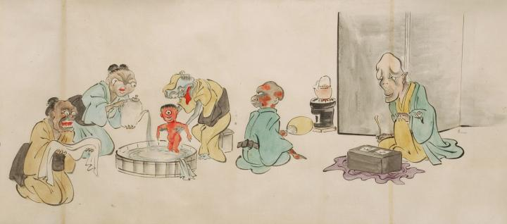

誕生した赤子の化物が産湯につけられている。赤子は全身が赤く一つ目で、産婆の化物に両脇を抱えられながら産湯に足をつけている。盥に湯を張る女の化物は両目が離れ顔の中央が変形している。赤子の身体を拭こうと布を手にして待ち構える女の化物の顔は岩のようにごつごつしている。赤子の様子を伺っているのは2体の男の化物。1体は丸坊主で肌が爛れたように見え、団扇で七輪に風を送っている。もう1体の顔の長い化物は屏風の前に座り、片膝を立てて様子を伺っている。
出典：親書誌：U426_nichibunken_0053：化物婚礼絵巻；バケモノコンレイエマキ／日付：2006／資源識別子：U426_nichibunken_0053_0020_0000
Copyright (c)2010- International Research Center for Japanese Studies, Kyoto, Japan. All rights reserved.